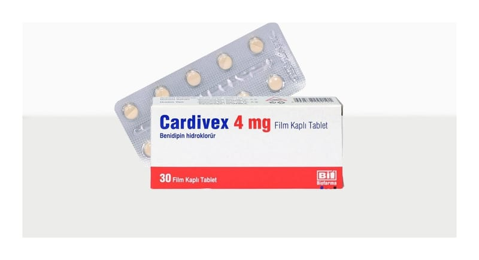

Cardivex 4 mg Film Kaplı Tablet, 30 adet

Ne için kullanılır
KT · Bölüm 1CARDİVEX, benidipin hidroklorür etkin maddesi içeren tansiyonu, kan basıncını düşüren bir ilaçtır.
Bu ilacı kullanmaya başlamadan önce bu KULLANMA TALİMATINI dikkatlice okuyunuz, çünkü sizin için önemli bilgiler içermektedir. Bu kullanma talimatını saklayınız. Daha sonra tekrar okumaya ihtiyaç duyabilirsiniz. Eğer ilave sorularınız olursa, lütfen doktorunuza veya eczacınıza danışınız. Bu ilaç kişisel olarak sizin için reçete edilmiştir, başkalarına vermeyiniz. Bu ilacın kullanımı sırasında, doktora veya hastaneye gittiğinizde doktorunuza bu ilacı kullandığınızı söyleyiniz. Bu talimatta yazılanlara aynen uyunuz. İlaç hakkında size önerilen dozun dışında yüksek veya düşük doz kullanmayınız.
CARDİVEX tabletlerin her biri 4 mg benidipin hidroklorür içermektedir ve her bir kutuda 30 tablet bulunmaktadır.
CARDİVEX; Hipertansiyonda (yüksek tansiyon) Renal parankimal hipertansiyonda (böbrek rahatsızlığı nedeniyle ortaya çıkan yüksek tansiyon) Anjina pektoriste (kalbi besleyen damarların daralması/tıkanması ile ortaya çıkan göğüs ağrısı) kullanılır.